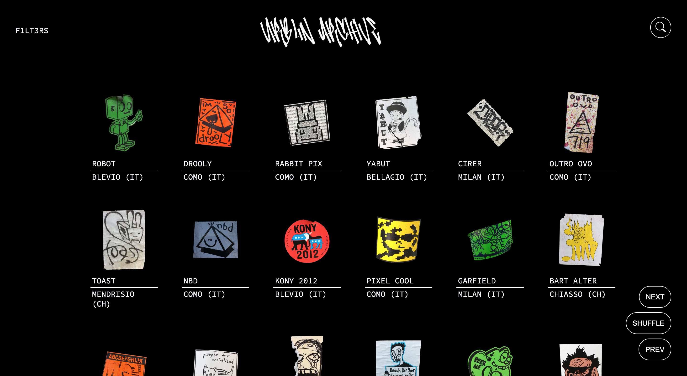
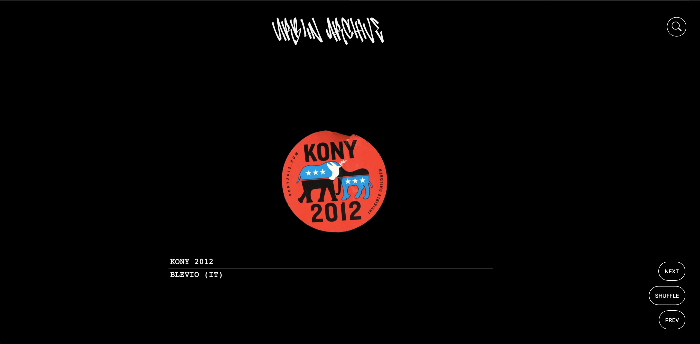
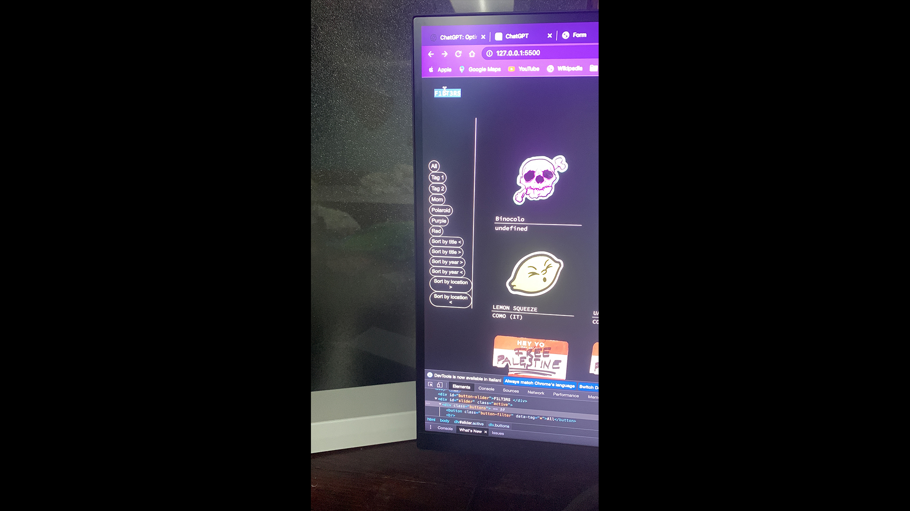

Giorgio Nicotera
URBAN ARCHIVE
The goal of my project is to use realize an online archive that with the.js events, is optimezed for experiences and a more fun way to use the website, in my case, i've used in particuar some keypress and mouse input.
Object
SOME INTERACTIONS
WEB PLATFORM
As you can see,URBAN ARCHIVE is an archive of stickers, the website is easy understandable and with a simple layout. The main actions are :SHUFFLE (space bar, NEXT (KEY D), PREV (KEY A), FILTERS (DOUBLECLICK), SEARCH (HOVER and the other buttons are clickable and on hover sohw a different background, similar to SEARCH that appear as a button and with the over u can actually write in.
As u can see this is the process of me building the interaction, the 3 buttons are the first that i have developed, in my first alfa version.
THE STICKER
This is the main page of the singular sticker
Every time i press the button or the "key" the sistem recognive my choice and select the singolar element or shuffle it or go back and forward.
FILTERS
In my filters we have some filters like "faces, color, B&W, TAG and sorts, per Name per Condition and per Location
The idea for the filter is to have a doubleclick, in this case fto close the filter in every point on the screen, so is easyier to use it